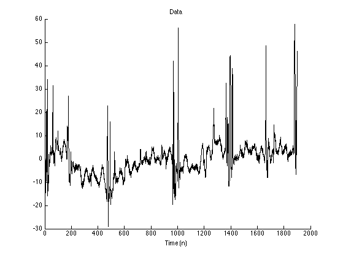
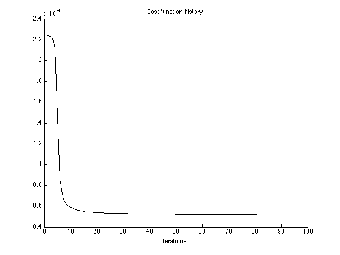
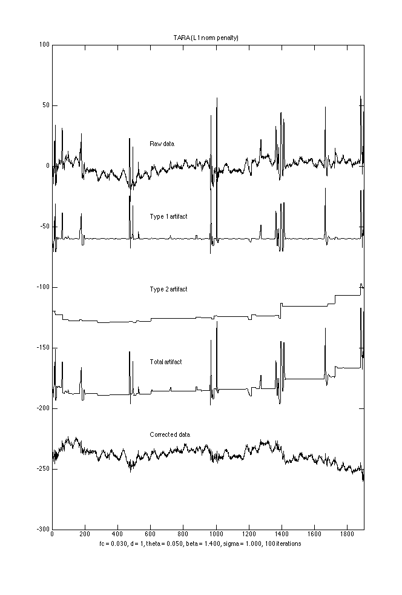
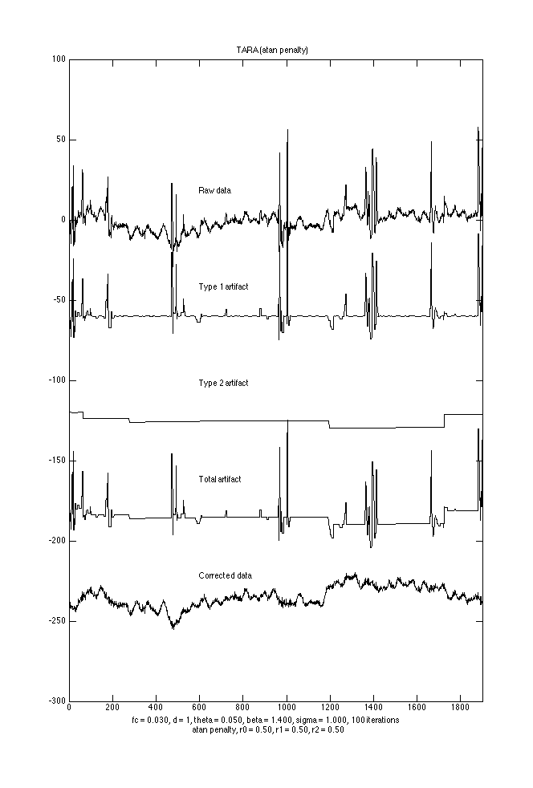

TARA_Example2: Transient Artifact Reduction Algorithm (TARA)
TARA is designed to remove step and spike artifacts from data with low-frequency and white stochasitc components.
Contents
Start
clear % close all printme = @(filename) print('-dpdf', sprintf('figures/TARA_Example2_%s', filename));
Load data
data = load('data/wl1_col02.txt'); y = data; N = length(y); n = 1:N; figure(1) clf plot(y); % xlim([900 1800]) box off title('Data') xlabel('Time (n)')
Set parameters
% Filter parameters: fc = 0.03; % fc : cut-off frequency (cycles/sample) (0 < fc < 0.5); d = 1; % d : filter order parameter (d = 1, 2, or 3) % TARA parameters theta = 0.05; beta = 1.4; ps = 1.0; % psuedo sigma (psuedo noise)
Define filters
The high-pass filter is H = B*inv(A) where A and B are banded matrices (sparse data type in MATLAB)
[A, B, B1] = BAfilt(d, fc, N); H = @(x) B*(A\x); % H : high-pass filter L = @(x) x - [nan(d,1); H(x); nan(d,1)]; % L : low-pass filter x_lpf = L(y); % x_lpf : Apply low-pass filter to data
Low-pass filter (LPF)
Apply the low-pass filter to the data. Observe that the output of the low-pass filter does not closely follow the slowly varying background trend. The brief pulses in the data cause the output of the low-pass filter to deviate from the background trend.
figure(1) clf plot(n, y, 'r', n, x_lpf) xlim([900 1800]) title('Low-pass filtering') legend('Raw data', 'LPF output')

TARA with L1 norm penalty
TARA: Transient artifact reducation algortithm
Nit = 100; % Run TARA [x1, x2, f, cost, lam0, lam1, lam2] = tara2_L1(y, d, fc, theta, beta, ps, Nit); txt = sprintf('fc = %.3f, d = %d, theta = %.3f, beta = %.3f, sigma = %.3f, %d iterations', fc, d, theta, beta, ps, Nit);
Cost function history
figure(1) clf plot(1:Nit, cost) xlabel('iterations') title('Cost function history') box off
Display output
signals = [data x1 x2 x1+x2 data-x1-x2];
labels = {'Raw data','Type 1 artifact', 'Type 2 artifact', 'Total artifact', 'Corrected data'};
M = length(labels);
gap = 60;
figure(2)
clf
plot(n, bsxfun(@plus, -(0:M-1)*gap, signals), 'black')
% xlim([900 1800])
xlim([0 N])
tt = text(600*ones(1,M), gap*(0.3-(0:M-1)), labels);
title('TARA (L1 norm penalty)')
xlabel( txt )
orient tall
printme('L1')
 Verifications
if 0 % Verify that programs tara_L1 and tara2_L1 return the same output % signals: [x1_, x2_, f_, cost_] = tara_L1(y, d, fc, lam0, lam1, lam2, Nit); % Run TARA % The following values should be zero or approximately zero disp( max(abs(x1 - x1_)) ) disp( max(abs(x2 - x2_)) ) disp( max(abs(f - f_)) ) disp( max(abs(cost - cost_)) ) end if 0 % Verify that programs tara2 and tara2_L1 return the same output when pen = 'L1' pen = 'L1'; [x1_, x2_, f_, cost_] = tara2(y, d, fc, theta, beta, ps, pen, 0, 0, 0, Nit); disp( max(abs(x1 - x1_)) ) disp( max(abs(x2 - x2_)) ) disp( max(abs(f - f_)) ) end if 0 % Verify that programs tara and tara2_L1 return the same output when pen = 'L1' pen = 'L1'; [x1_, x2_, f_, cost_] = tara(y, d, fc, lam0, lam1, lam2, pen, 0, 0, 0, Nit); disp( max(abs(x1 - x1_)) ) disp( max(abs(x2 - x2_)) ) disp( max(abs(f - f_)) ) end
TARA with non-convex penalty
pen = 'atan'; r = 0.5; % Initialize with L1 solution [x1, x2, f, cost_, u1, u2] = tara2(y, d, fc, theta, beta, ps, 'L1', 0, 0, 0, Nit); [x1_ncvx, x2_ncvx, f_ncvx, cost_ncvx] = tara2(y, d, fc, theta, beta, ps, pen, r, r, r, Nit, u1, u2); txt2 = sprintf('%s penalty, r0 = %.2f, r1 = %.2f, r2 = %.2f', pen, r, r, r);
Cost function history
figure(1) clf plot(1:Nit, cost_ncvx) xlabel('iterations') title('Cost function history') box off

Display output
signals = [data x1_ncvx x2_ncvx x1_ncvx+x2_ncvx data-x1_ncvx-x2_ncvx];
labels = {'Raw data','Type 1 artifact', 'Type 2 artifact', 'Total artifact', 'Corrected data'};
M = length(labels);
gap = 60;
figure(2)
clf
plot(n, bsxfun(@plus, -(0:M-1)*gap, signals), 'black')
% xlim([900 1800])
xlim([0 N])
tt = text(600*ones(1,M), gap*(0.3-(0:M-1)), labels);
title('TARA (atan penalty)')
xlabel({txt, txt2})
orient tall
printme('atan')
 Display detail
xlim([900 1800]) tt = text(1100*ones(1,M), gap*(0.3-(0:M-1)), labels); orient tall printme('atan_detail')

Verification
if 0 % Verify that 'tara' and 'tara2' return the same ouput [x1_ncvx, x2_ncvx, f_ncvx, cost_ncvx, u1, u2, lam0, lam1, lam2, a0, a1, a2] ... = tara2(y, d, fc, theta, beta, ps, pen, r, r, r, Nit, u1, u2); % Initialize with L1 solution [x1, x2, f, cost_, u1, u2] = tara(y, d, fc, lam0, lam1, lam2, 'L1', 0, 0, 0, Nit); [x1_ncvx_, x2_ncvx_, f_ncvx_, cost_ncvx_] = tara(y, d, fc, lam0, lam1, lam2, pen, a0, a1, a2, Nit, u1, u2); ma = @(x) max(abs(x(:))); disp( ma(x1_ncvx - x1_ncvx_) ) disp( ma(x2_ncvx - x2_ncvx_) ) disp( ma(f_ncvx - f_ncvx_) ) disp( ma(cost_ncvx - cost_ncvx_) ) end